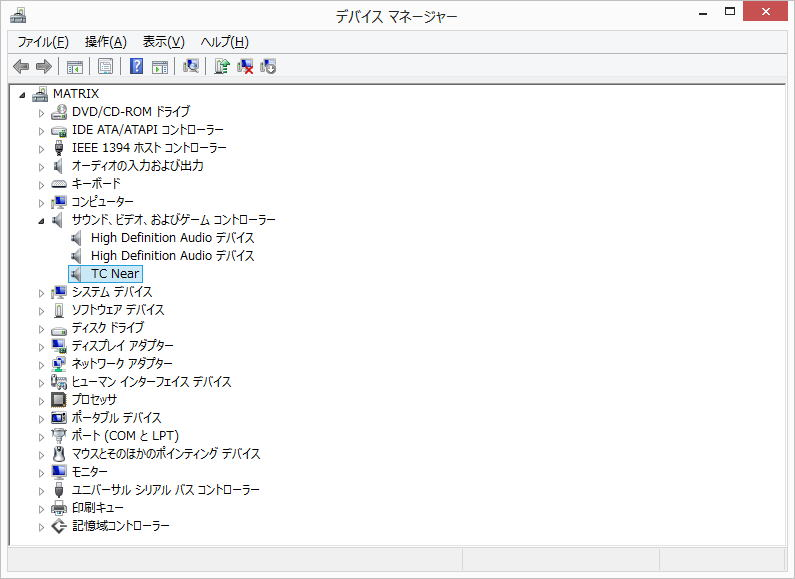
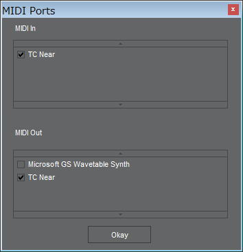

| TOP | weblog | TIPS | Works | リンク |
| 2012-10-26 Konnekt Live の威力 僕の音楽師匠から 「Konnekt Live」なるオーディオインターフェイスを拝借しました。 実装はFireWire（IEEE 1394）、はじめてお世話になったI/Fです。 (FireWireと言う単語も知らんかった(恥)) ３万５千円のKORGのエレピのプリセット音はとにかく酷くてノイズも多いためSoundFontで鳴らすことが出来ました。 先日、PCとエレピをWindows8Pro64bitにセットアップしたのだけれども、レイテンシしまくりでまったく鳴らず。 退院後のあいさつも兼ねて師匠に電話してみましたところ「オーディオインターフェイスが無いからじゃね？」と。 お使いになってないオーディオインターフェイスがあるということで、先日送って頂き、本日セットアップしました。 １．ドライバ&コントロールパネル SOFTWARE VERSION 2.5 for PC 64 bit: Supports Windows XP / Windows Vista / Windows 7 64 bit. *インストールするとオーディオデバイスとして認識されるほかMidi In/Out Port も増設されます。  minihostのmidi設定  「Minihost + sfz」をMidi音源としてシーケンサーのMidi In/Outを「TC Neare」にすると、ノー・レイテンシで弾けます、録音できます、再生できます。 TC Nearのコンパネ、かっこいい。 ADATとあるがこれは「アレシス」の「ADAT」のことかな？ ・問題点 Windows Media Player等、MIDI OUTの設定がないプレイヤーだと、ただし、Windowsデフォルトが「ゲイツ」のままなのでSoundFontやCSToで鳴らすことができない？ (1)演奏中、たまに「ブツッ！」とノイズ発生。smf再生時には発生しない。 (2)唯一、それなりに使いこなせる音楽ソフト「Music Studio Standard」で「minihost」を音源にしたとき、録音はちゃんと出来るのですが再生で「TC Near」では音が鳴りません。 |